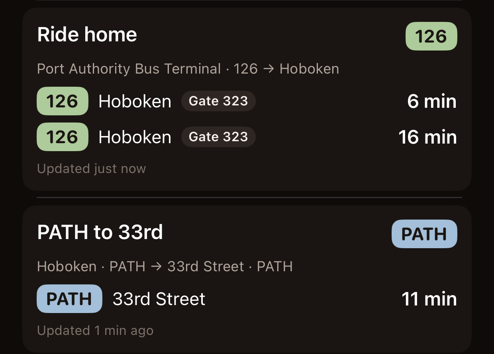
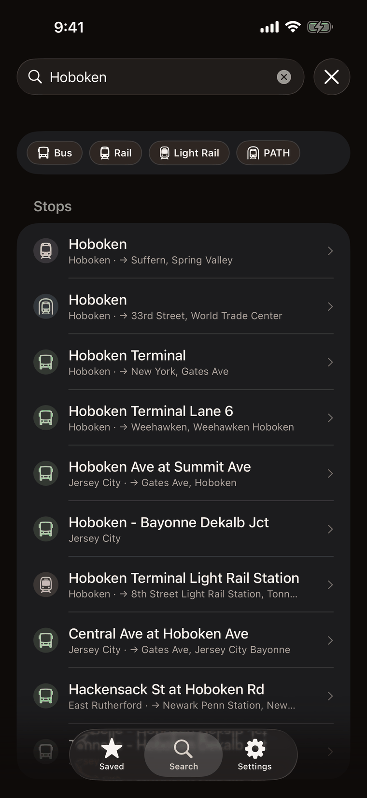
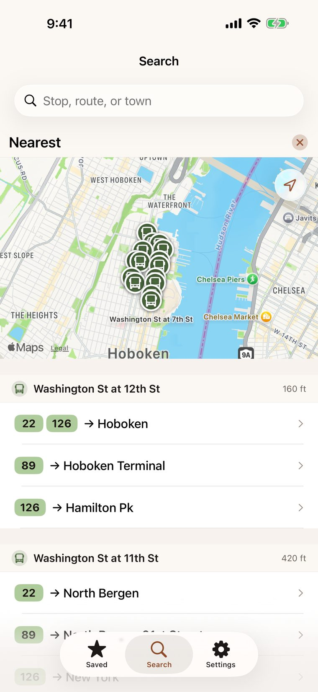
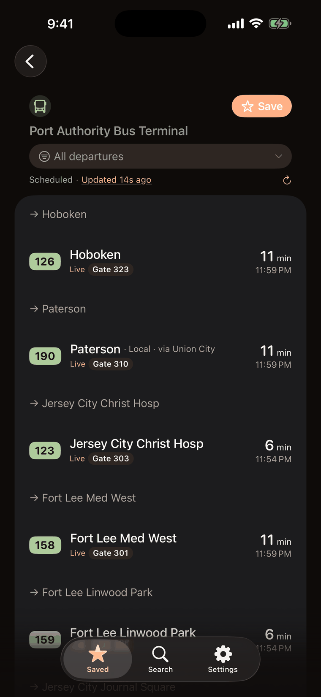
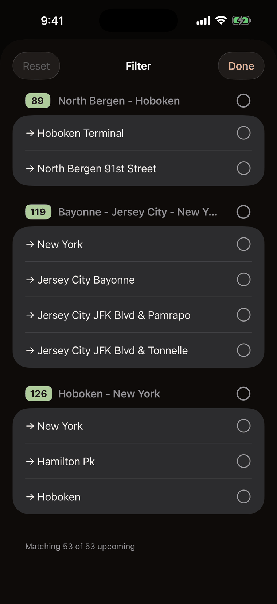
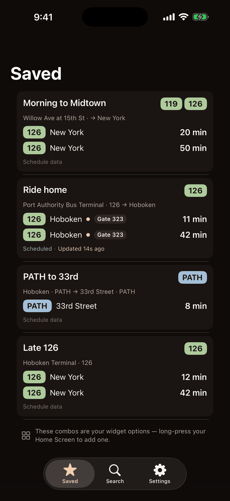

Touch and hold the Home Screen, tap Edit → Add Widget, choose StopSpotter and a size. Then touch and hold the widget you just placed, tap Edit Widget, and pick the saved stop it should show — that last step is the one people miss.
 StopSpotter
StopSpotter
When is the next one?
Right on your Home Screen.
An independent app covering NJ Transit bus, rail and light rail, plus PATH.

Download on the App StoreFree · no account · no ads
Save the stops you use and the answer is waiting when you glance — live predictions when the agency is reporting them, timetable data when it isn't, and always a note saying which you're looking at and how old it is.
iPhone, iOS 26.2 or later. The free app puts your nearest stop on the Home Screen; StopSpotter+ points a widget at a stop you saved — $2.99, one time.
One place
Your whole commute in one app.
A trip that touches a bus and a train means more than one app today — and more than one place to look even inside them, because operators and modes get filed separately. StopSpotter doesn't file them separately. Every operator and mode it supports lives in one index, so one search reaches all of it and mode arrives as a tag on the result rather than a choice you make first.
A bus stop and a PATH station turn up in the same search and sit side by side in Saved. You stop keeping a mental map of which app knows about which part of your journey.
- 126Bus
- NECRail
- RVLLight rail
- PATHPATH trains

One list · a bus terminal and a PATH station, side by side
Never a dead end
There is always an answer.
Real-time feeds go down. Timetables don't. StopSpotter carries both, so an answer is always on screen — and the footer tells you which kind you're reading and how much to trust it. You never have to open something else to find out when the next one is meant to leave.
- Live
updated 1 min ago
A live prediction from the agency, stamped with the moment it arrived. If that stamp grows older, a tap of the refresh button fetches the latest.
- Timetable
Schedule data
The published times, bundled in the app and needing no network at all. You'll see this whenever there's no live prediction to show — whether nothing live runs for that stop and hour, or the feed isn't answering. The label doesn't separate the two, so neither do we: it means this is the timetable, not a prediction.
The labelling isn't a disclaimer. It's the difference between a number you can plan around and a number worth double-checking.
Inside the app
Find it once. Then just glance.
Not a widget with an app bolted on. Search any stop in the system, see everything upcoming there, save the routes and direction you actually take — and from then on the answer is one glance away. Every step below is free.
01 · Discover
One search reaches every mode.
Bus, rail, light rail and PATH sit in one index, so you type once and the mode arrives as a tag on the result rather than a choice you make first.

02 · Or don't search at all
Stops near you, no typing.
Somewhere unfamiliar, open StopSpotter and the stops around you are already listed, closest first, with the routes each one serves.

03 · Departures
Gates at Port Authority.
Open a stop and everything upcoming is there. Where NJ Transit reports the gate a bus is boarding from, it sits right on the row — so you read it here instead of hunting the concourse board. Gate assignments can change; check the signage before boarding.

04 · Save it
Your routes, your direction, your name for it.
Pick the routes you care about and which way you're going, then call it whatever you like. A saved stop can watch several routes at once — the 119 and the 126, whichever comes first — and merge them into one list.

05 · Saved
Then you never search again.
Everything you saved in one tab, live times and gates on the card. Saving is free and there's no limit on how many you keep.

06 · The free widget
And then you don't open the app at all.
That's where the walkthrough ends and the Home Screen begins. Free includes one widget, showing the nearest stop. Nothing to configure and nothing to pick — it's there for the trip you didn't plan, when you're somewhere unfamiliar and have no saved stop to check.

Free · always the nearest stop · nothing to set up
Everything above is included free
StopSpotter+
All your stops on the Home Screen — as many as you like, stacked in one spot you swipe through.
$2.99 · one time · not a subscription
StopSpotter+
All your stops. One spot.
The free widget answers the question you didn't plan for — somewhere unfamiliar, what's leaving from the nearest stop. StopSpotter+ answers the one you have every day: the stops you picked and named, each on its own widget, gathered into one spot you swipe through. Not the nearest stop. Your stops.


One widget per saved stop — stack them and swipe
Placing one
What it costs
$2.99, one time
Not a subscription. Bought through the App Store, restorable on your other devices.
iOS budgets background widget refreshes per app rather than per widget, so the more you place the less often each one updates on its own. The tap is always there, and every widget says how old its data is.
Put your stops where you'll see them.
Download on the App StoreFree · iPhone · iOS 26.2
Questions? See support.